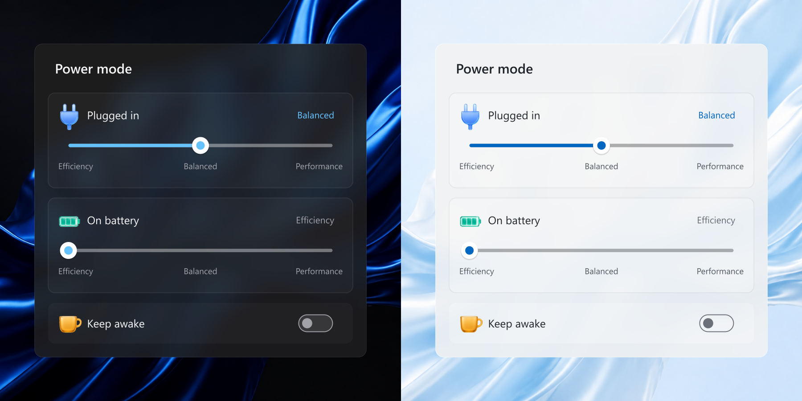

Separate AC and battery modes.
Efficiency, Balanced or Performance for each power source.
Power mode controls for Windows 11
Switch plugged-in and battery power modes from one compact Acrylic flyout.
Windows 11 x64 · Native C++ / Win32 · Free and open source

One click from the tray
Separate controls for battery and plugged-in use.
Efficiency, Balanced or Performance for each power source.
Acrylic blur, light and dark themes, native motion and Fluent tray icons.
Stay awake when needed, with automatic low-battery protection.